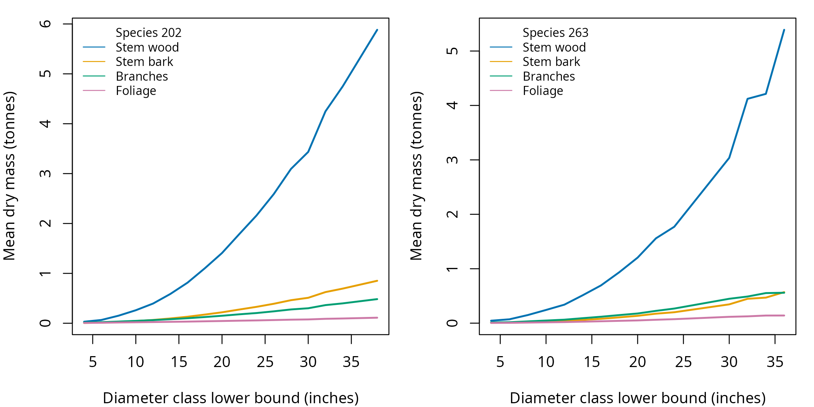

biomass() returns dry biomass, carbon, and carbon
dioxide equivalent in metric tonnes from inputs in inches and feet.
Component columns support tree and stand mass summaries.
National coefficients
The default uses national coefficients. Each output row corresponds to its input tree.
## Calculate biomass for the shipped tree list
mass <- example_trees_pnw %>%
mutate(biomass(dbh = dbh,
ht = ht,
spcd = spcd))| tree_id | stem wood (tonnes) | stem bark (tonnes) | branches (tonnes) | foliage (tonnes) | carbon (tonnes) | carbon dioxide equivalent (tonnes) | status |
|---|---|---|---|---|---|---|---|
| 1 | 2.163 | 0.329 | 0.208 | 0.058 | 1.393 | 5.109 | 0 |
| 2 | 0.218 | 0.038 | 0.043 | 0.018 | 0.154 | 0.564 | 0 |
| 3 | 0.339 | 0.057 | 0.057 | 0.022 | 0.234 | 0.856 | 0 |
| 4 | 0.062 | 0.012 | 0.020 | 0.009 | 0.049 | 0.179 | 0 |
| 5 | 5.390 | 0.570 | 0.559 | 0.141 | 3.305 | 12.118 | 0 |
| 6 | 0.168 | 0.021 | 0.036 | 0.012 | 0.114 | 0.417 | 0 |
The component curves summarize mass by diameter class for each species.
| spcd | diameter class lower bound (inches) | mean stem wood (tonnes) | mean stem bark (tonnes) | mean branches (tonnes) | mean foliage (tonnes) |
|---|---|---|---|---|---|
| 202 | 4 | 0.031 | 0.007 | 0.014 | 0.007 |
| 202 | 6 | 0.066 | 0.013 | 0.022 | 0.010 |
| 202 | 8 | 0.152 | 0.027 | 0.034 | 0.015 |
| 202 | 10 | 0.261 | 0.045 | 0.048 | 0.019 |
| 202 | 12 | 0.395 | 0.066 | 0.063 | 0.024 |
| 202 | 14 | 0.587 | 0.096 | 0.081 | 0.028 |
| 202 | 16 | 0.814 | 0.131 | 0.101 | 0.033 |
| 202 | 18 | 1.101 | 0.174 | 0.125 | 0.039 |
| 202 | 20 | 1.408 | 0.219 | 0.150 | 0.045 |
| 202 | 22 | 1.787 | 0.275 | 0.179 | 0.051 |
| 202 | 24 | 2.160 | 0.329 | 0.205 | 0.057 |
| 202 | 26 | 2.589 | 0.390 | 0.239 | 0.064 |
| 202 | 28 | 3.094 | 0.462 | 0.277 | 0.072 |
| 202 | 30 | 3.435 | 0.511 | 0.301 | 0.077 |
| 202 | 32 | 4.248 | 0.625 | 0.364 | 0.089 |
| 202 | 34 | 4.749 | 0.695 | 0.398 | 0.096 |
| 202 | 38 | 5.883 | 0.852 | 0.484 | 0.111 |
| 263 | 4 | 0.045 | 0.006 | 0.013 | 0.004 |
| 263 | 6 | 0.071 | 0.009 | 0.017 | 0.006 |
| 263 | 8 | 0.149 | 0.018 | 0.033 | 0.011 |
| 263 | 10 | 0.243 | 0.029 | 0.048 | 0.015 |
| 263 | 12 | 0.340 | 0.040 | 0.064 | 0.020 |
| 263 | 14 | 0.512 | 0.060 | 0.091 | 0.027 |
| 263 | 16 | 0.694 | 0.080 | 0.118 | 0.035 |
| 263 | 18 | 0.936 | 0.107 | 0.149 | 0.043 |
| 263 | 20 | 1.205 | 0.135 | 0.178 | 0.050 |
| 263 | 22 | 1.559 | 0.174 | 0.226 | 0.063 |
| 263 | 24 | 1.771 | 0.201 | 0.268 | 0.073 |
| 263 | 30 | 3.037 | 0.345 | 0.448 | 0.117 |
| 263 | 32 | 4.122 | 0.448 | 0.489 | 0.125 |
| 263 | 34 | 4.213 | 0.469 | 0.553 | 0.140 |
| 263 | 36 | 5.390 | 0.570 | 0.559 | 0.141 |

dry_agb_no_foliage excludes foliage. Stem totals overlap
stump, saw, topwood, and tip columns, so those columns are not additive.
Carbon excludes foliage. tco2e converts carbon to carbon
dioxide equivalent.
Invalid inputs retain their rows with missing masses and a status code.
Carbon fraction
carbon_fraction() returns the live tree carbon fraction
of dry mass, with a source attribute.
## Look up the example species fractions
fractions <- example_trees %>%
distinct(spcd) %>%
mutate(carbon_fraction = carbon_fraction(spcd = spcd))| spcd | carbon fraction (unitless) |
|---|---|
| 202 | 0.516 |
| 263 | 0.507 |
Optional location lookup
nsvb_division()
returns county ecological codes. nsvb_division_xy()
returns coordinate assignments and status, using the shipped boundaries.
Use county codes directly, or the coordinate result’s value
column, as the optional coefficient selector.